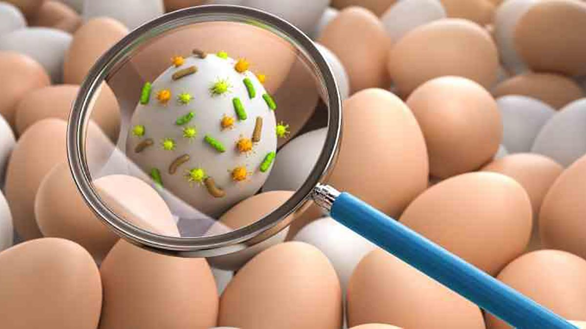

ENCICLOPEDIA MÉDICA SEMPERE-OLIVER
La infección por salmonela suele ser producto de la ingesta de carne, carne de aves, huevos o productos a base de huevo crudos o poco cocidos, o de leche no pasteurizada. El período de incubación (el tiempo entre la exposición y la enfermedad) puede ser de 6 horas a 6 días. Con frecuencia, las personas que tienen infección por salmonela creen que tienen gripe estomacal.
¡Especialmente se debe tener cuidado con el huevo crudo!
El tratamiento de la salmonelosis es el de cualquier gastroenteritis del verano: dieta blanda y abundantes líquidos y suero oral para recuperar los electrolitos perdidos a consecuencia de la diarrea y los vómitos. Normalmente con estas medidas y reposo relativo la salmonelosis se resuelve en unos pocos días
La recuperación de un proceso de salmonelosis puede tardar entre tres y siete días y es habitual que se produzca sin intervención médica, siempre que ese haga una rehidratación correcta, debido a la gran cantidad de líquidos que se pierden a causa de la diarrea. Existen grupos de población donde la intoxicación por Salmonella puede tener consecuencias más graves, como en bebés y niños pequeños, mujeres embarazadas, personas mayores e inmunodeprimidos
Aquí puede encontrar más información sobre la Salmolenosis
Volver Atrás Volver página principal
Copyright© 2022 David Oliver García y Jose Manuel Sempere García